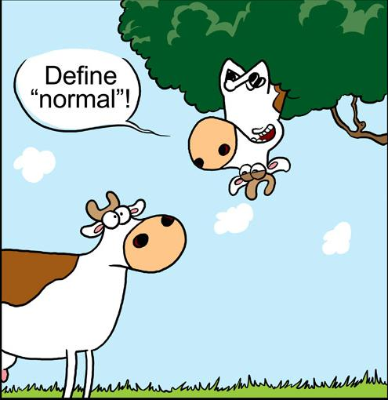

VIM
Modos
- Modo normal
- Modo de inserção
- Modo de comando
- Modo visual
- Modo ex
- Modo de pesquisa
... e os menos conhecidos...
- Modo de esperando pesquisa
- Modo de espera de comando
Modo normal
O modo normal é o modo que o VIM inicia.
Nele é possível movimentar o cursor, copiar e colar, entrar em modo de inserção, entrar em modo de pesquisa, entrar em modo de comando, entrar em modo visual, ...
Movimentação
"Você só pode movimentar no texto usando h,
j, k e l".

f[letra]: Move o cursor para a próxima ocorrência de [letra] na linha atual.t[letra]: Move o cursor para uma posição antes da próxima ocorrência de [letra] na linha atual.F[letra]: Move o cursor para a ocorrência anterior de [letra] na linha atual.T[letra]: Move o cursor para uma posição antes da ocorrência anterior de letra na linha atual.
w: Move o cursor para o começo da próxima palavra.e: Move o cursor para o fim da próxima palavra.b: Move o cursor para o começo a palavra anterior.ge: Move o cursor o fim da palavra anterior.
Todos os comandos em modo normal aceitam uma quantidade de repetições do mesmo.
3w irá pular 3 palavras.
3f. irá pular para a terceira ocorrência do ponto
na mesma linha.
0: Move o cursor para a coluna 0._: Move o cursor para o primeiro caracter que não seja espaço ou tabulação.$: Move o cursor para o último caractere da linha.%: Mover o cursor para o par do elemento sob o cursor (por exemplo, se estiver sobre um "(", move o cursor para o respectivo ")").
O cursor

Removendo texto
x: Remove o caractere sob o cursor.dd: Remove a linha do cursor.
Contar funciona
10x apaga 10 caracteres.
20dd apaga 20 linhas.
Modo de inserção
No modo de inserção é quando finalmente o que você digita aparece no texto.
i: Entra em modo de inserção.a: Avança o cursor uma posição e entra em modo de inserção (ouli).A: Move o cursor para o fim da linha e entra em modo de inserção (ou quase$a).o: Insere uma linha em branco depois do cursor e entra em modo de inserção.O: Insere uma linha em branco acima do cursor e entra em modo de inserção.R: Entra em modo de inserção mas substitui os caracteres ao invés de adicionar mais.
r
r faz parte dos comandos de inserção mas não
entra em modo de inserção.
r[letra] substitui o caractere sob o cursor e volta
para o modo normal (basicamente xa[letra]{Esc}).